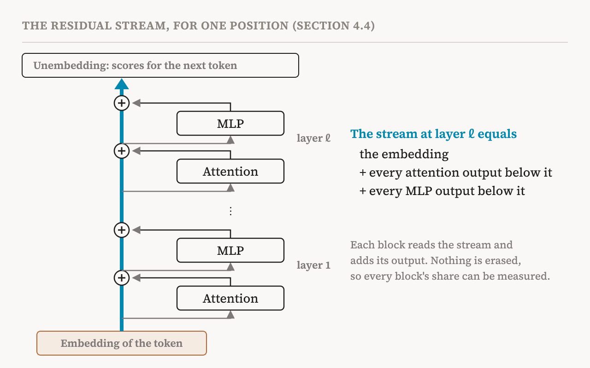
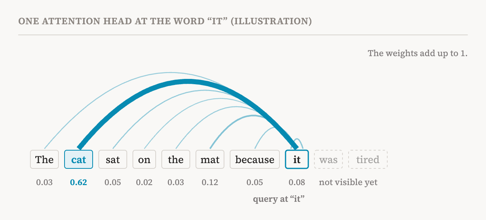

The rest of this series talks about neurons, features, attention heads and circuits inside language models. Those words only make sense once you can picture where they live. This part draws that picture. It follows section 4.4 of the book (pages 23–25), which is short and written in equations. Here the equations are explained in words, with some background the book assumes added along the way. Where that background is not in the book, this part says so.
Why transformers
Transformers, introduced in 2017, are the architecture underneath today's AI assistants such as ChatGPT and Claude, and so they are the main subject of mechanistic interpretability. The book points to two properties that make them easier to study than one might expect: they are built from separate modules, and information flows through them by addition. Both become clear once we look at what the model does with a piece of text.
From text to vectors and back (background)
This section is background that the book takes for granted.
A language model does not read letters. It first splits text into tokens, which are whole words or pieces of words, and turns each token into an embedding: a long list of numbers, a vector. How long depends on the model; in today's large models it is typically several thousand numbers. The book calls this length the hidden size and writes it as d. A sentence of T tokens therefore becomes T vectors, one per position.
The model then passes these vectors through a stack of layers, often dozens of them. Each layer updates every position's vector. At the very end, a final step called the unembedding turns the vector at the last position into a score for every token in the vocabulary, and those scores become the probabilities of what the next token will be. Writing a whole answer is just this step repeated: predict a token, add it to the text, predict again.
So everything interesting happens in the middle, as those vectors are updated layer after layer. The book's key idea is about how that updating works.
The residual stream
Think of each position's vector as a shared notebook that travels up through the layers. The book calls it the residual stream. At every layer, two kinds of components take turns: an attention module and a multi-layer perceptron (MLP). Each one reads the current notebook, computes something, and then adds its result to the notebook. It does not erase what is already there.
In the book's notation, if h is the stream coming into a layer, the attention module adds its output first, and the MLP then adds its own output to the result. Written out, the stream after attention is h + Attention(h), and the stream after the MLP is that same sum plus the MLP's output on it.
Repeat this through every layer and something useful falls out. The stream at any layer equals the original embedding plus the sum of everything that every attention module and every MLP below it has written. Nothing has been mixed in a way that cannot be taken apart.

This is why the book calls the residual stream a shared communication channel. Components that sit far apart never talk directly, but a component in layer 3 can write something into the stream that a component in layer 20 reads. And because the stream is a sum, researchers can ask precise questions such as: how much of the final prediction came from this particular attention head? The book calls this view central to mechanistic interpretability, because it lets the model's computation be broken down into additive contributions from individual components.
There is one honest complication. Real transformers also contain layer normalisation, a step that rescales the stream to keep its numbers in a stable range. Strictly speaking, that breaks the clean sum. The book follows a standard argument: for a given input, layer normalisation behaves almost like a simple linear transformation plus a single rescaling factor. The linear part can be folded into the neighbouring weights, and the rescaling only changes how strongly each contribution counts. So the stream can still be treated as an additive channel, which is what nearly all interpretability work does.
Two kinds of work
Attention modules and MLPs do different jobs, and that division is what lets researchers study them separately. According to the book, attention modules mainly move information between positions: they route it, gather it and combine it across the text. MLPs mainly work within a single position: they transform the features already there and, in many cases, retrieve stored knowledge such as facts. One moves information sideways across the text; the other processes it in place.
Attention: looking back at other words
A language model needs to connect words. To understand "it" in "The cat sat on the mat because it was tired", the model has to bring information about "cat" to the position of "it". Attention is the mechanism for that.
An attention module is made of several attention heads working in parallel. Each head does the following at every position. It turns the stream into three smaller vectors using three learned matrices. The query says what this position is looking for. The key says what this position offers to others. The value is the content this position will pass on if someone attends to it. The book writes the matrices as W_Q, W_K and W_V, and the size of these smaller vectors as d_head.
Then the head compares the query at each position with the keys at the other positions. The better a query and a key match, the higher the score. A function called softmax turns each position's scores into weights that are all positive and add up to 1. This table of weights, one row per position, is the head's attention pattern. Finally, each position collects a weighted mix of the other positions' values, and an output matrix, W_O, turns that mix back into the size of the stream and adds it in. The outputs of all heads are added together to form the module's output.

In language models, a position is only allowed to look at itself and at earlier positions, never at later ones, because the model has to predict the next token without seeing it. (This detail is background; the book's general formula does not show it.)
Attention patterns are easy to plot, which is one reason they were among the first things researchers looked at. Part 1 mentioned the long debate about whether those plots explain a model's decisions. The safer reading is that an attention pattern shows where a head moves information from, not what that information is or what the model does with it.
The MLP: thinking in place
The MLP block is simpler to describe. At each position separately, it multiplies the stream by one matrix, W_1, applies a nonlinear function to every number in the result, and multiplies by a second matrix, W_2, to get back to the size of the stream. Its output is added to the stream like everything else. The original transformer used a function called ReLU, which keeps positive numbers and turns negative ones into zero.
The first matrix expands the stream into a much larger space. The book writes its size as d_mlp and says only that it is much larger than d; in many models it is about four times d. Each number in that larger space, after the nonlinear function, is the activation of one neuron. When interpretability researchers talk about neurons in a language model, this is usually what they mean. The book notes that recent work finds this expanded space gives more interpretable representations than the stream itself. Part 5 picks up the story of neurons there, and of why they turned out to be harder to read than hoped.
Because the MLP has no way to look at other positions, whatever it does depends only on what is already in that position's stream. That makes it a natural place for transforming features and for recalling facts associated with what has been gathered so far. The book cites studies that found MLP layers acting as stores of factual knowledge.
Today's variants
The book describes the canonical transformer, but notes that modern models change its parts. Attention has variants such as grouped-query attention, used in Llama 3, and multi-head latent attention, used in DeepSeek-V2 and DeepSeek-V3. Both are mainly ways to make attention cheaper to run. MLPs have gated variants such as SwiGLU, used in Llama 3, and mixture-of-experts designs, used in DeepSeek-V3. In a mixture of experts, each layer contains many separate MLPs, called experts, and a small router picks a few of them for each token, so only part of the model is used at a time. The core picture of components reading from and adding to a residual stream stays the same.
Why this picture matters for the rest of the series
Three things from this part come back again and again. First, the residual stream is a space of d dimensions, and the next parts ask how concepts are stored in it: as single neurons, as directions, or as something else. Second, because the stream is a sum, the contribution of any component can be isolated, which is what makes the interventions of later parts possible. Third, attention heads and MLPs are the building blocks that circuits are made of, and part 6 shows how researchers describe a mechanism as a small graph of them. Part 19 shows the most famous example: two attention heads in different layers that cooperate through the residual stream to let a model continue a pattern it has seen earlier in the text.
| Term | Meaning |
|---|---|
| Token | A word or piece of a word, the unit a language model reads and writes |
| Embedding | The vector of numbers a token is turned into before the first layer |
| Hidden size (d) | The number of dimensions of the residual stream |
| Unembedding | The final step that turns the last vector into scores for every possible next token |
| Residual stream | The vector at each position that every component reads from and adds its output to |
| Layer normalisation | A step that rescales the stream; it can mostly be folded into neighbouring weights |
| Attention head | A component that moves information between positions |
| Query, key, value | The three vectors a head makes at each position: what it looks for, what it offers, what it passes on |
| Attention pattern | The table of weights showing how much each position draws from each earlier position |
| Softmax | A function that turns scores into positive weights that add up to 1 |
| MLP | A component that transforms the stream at each position separately |
| Neuron | One unit of the MLP's expanded hidden layer, after the nonlinear function |
| Mixture of experts | A design with many MLPs per layer, of which a router uses only a few for each token |
Next, part 5 asks what the numbers in the stream stand for: neurons, concepts, and the book's definition of a feature.